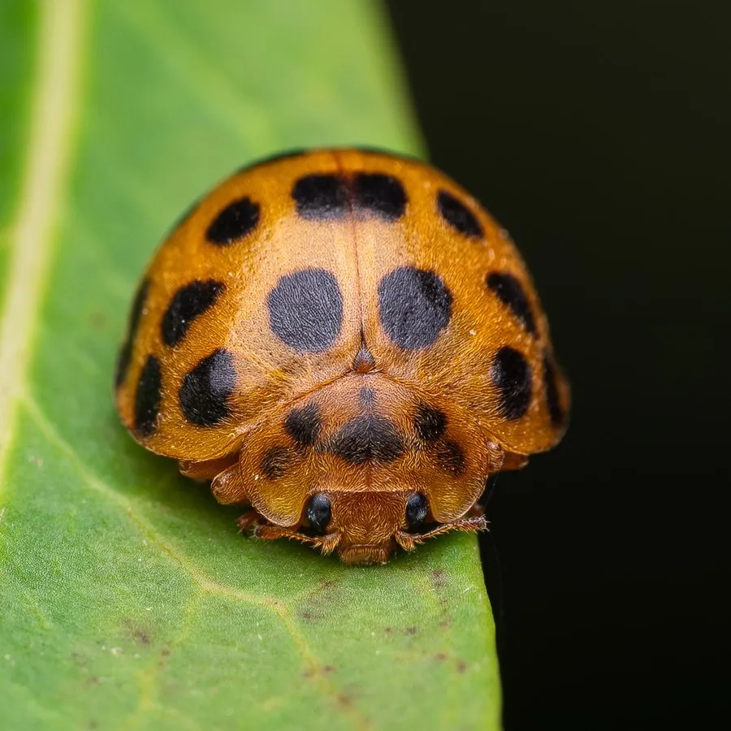

昆虫 · 动物界
二十八星瓢虫 Henosepilachna vigintioctopunctata

鞘翅上有 28 个黑色斑点、以植物为食的瓢虫，幼虫和成虫啃食茄科和葫芦科叶片，是常见的农业害虫。
- 分类
- 门节肢动物门纲昆虫纲目鞘翅目科瓢虫科属裂臀瓢虫属
- 栖息环境
- 菜园、农田与茄科、葫芦科作物种植区
- 地理分布
- 中国大部分地区，以及日本、东南亚和南亚
- 保护级别
- 暂无评估；农业害虫
物种志
二十八星瓢虫成虫体长约 6–7 mm，体呈半球形，鞘翅黄褐至橙黄色，每片鞘翅上有 14 个黑色斑点，合计 28 个，因此得名；前胸背板也有黑色斑点，体表密被细毛，与常见的捕食性瓢虫不同。
它属于植食性瓢虫，成虫和幼虫都取食植物叶片，尤其偏爱茄子、马铃薯、番茄等茄科作物和黄瓜、南瓜等葫芦科作物，把叶片吃成网状的孔洞。雌虫把卵产在叶片背面，幼虫孵化后群集取食，老熟后在叶背化蛹。二十八星瓢虫在亚洲分布很广，一年发生多代，是中国南方菜园和农田中常见的害虫之一。防治以人工捕捉、清除越冬虫源和科学用药为主，注意保护寄生蜂等天敌。
形态与习性
- 食性成虫和幼虫啃食茄子、马铃薯、黄瓜等叶片
- 体长约 6–7 mm
- 识别鞘翅黄褐色，共 28 个黑色斑点
- 生活史一年多代，幼虫群集取食后在叶背化蛹
- 防治人工捕捉、清除越冬虫源和科学用药
趣味知识
- 二十八星瓢虫每片鞘翅上有 14 个黑点，两片加起来正好 28 个。
- 和大多数吃蚜虫的瓢虫不同，它是植食性的害虫。
- 它的幼虫和成虫都会啃食茄子和马铃薯的叶片。